How To Guide: Hardening Mozilla Firefox For Privacy & Security 2016 Edition
Cyber Security Wiki Navigation:
- Cyber Security Wiki Home
- How To Secure Your Passwords
- How To Secure Your Email
- Browser Security
- Desktop & Laptop Operating System (OS) Security & Privacy
- Smartphone Security & Privacy
- Firewall Security Setup, Settings, & Guides
Welcome to our 2016 guide for hardening Firefox against security and privacy threats. This guide is intended to show users how to modify Firefox settings to resist surveillance by governments and corporations, to increase the strength of the encryption while browsing and to reduce the amount of data leaking from your browser.
Important changes since the 2014 edition:
-The recommendation for Adblock Plus has been changed to µBlock. This is because Adblock Plus is whitelisting ad domains and not blocking all ads. Adblock Edge, an alternative, is also being discontinued. µBlock also uses less resources than Adblock Plus.
-We have dropped the recommendation for CipherFox as Firefox has improved the browser to allow similar functionality without the add-on.
-The recommendation for Ghostery has been changed to Disconnect. This is because Ghostery has poor default settings and because it is maintained by a web marketing company.
-We have added a method for disabling WebRTC.
-We have added two new add-ons for User Agent Switching to protect users from browser profiling.
-We have added the recommendation for the EFF's Privacy Badger.
-We have added the recommendation for Mozilla's Lightbeam.
-We have added a segment on managing trusted CAs to reduce the risks of Man In The Middle attacks.
This guide is effective. You can see the results in a separate article here:
https://vikingvpn.com/blogs/security/visualizing-how-you-are-being-tracked-using-mozilla-lightbeam
Getting Started:
This guide assumes that you have already installed Firefox and are using it as your primary browser. Following this entire guide should take 25 to 40 minutes.
Step 1: Install the Best Firefox Extensions for Privacy and Security.
We recommend uBlock, NoScript, Disconnect, HTTPS Everywhere, Privacy Badger, and Lightbeam.
Why we recommend uBlock: It is an up and coming ad-blocker with the same types of functionality as Adblock Plus, but doesn't have exceptions. It blocks all ads indiscriminately.
Why we recommend NoScript: It is a powerful script blocking tool that disables all kinds of complex web code that can be used to exploit browser vulnerabilities. It also blocks a lot of advanced tracking technologies. It also allows you to manually enable scripts either by white-listing an entire site, or you can manually allow specific scripts on a page, or even allow scripts temporarily for a one-time use of a site. It is powerful with fantastic granular controls.
Why we recommend Disconnect: Disconnect blocks many kinds of tracking cookies and tokens, and gives you a nice overlay of the blocked content so that you can see how many and what kind of cookies or tracking tokens were going to be loaded into your browser. It also allows granular controls and whitelisting to give sites full functionality when needed.
Why we recommend HTTPS Everywhere: The unencrypted web is dangerous. HTTPS everywhere makes it so that if a secure connection is available, it will be used by your browser by default. This will reduce the amount that you will have to browse websites unprotected automatically.
Why we recommend Privacy Badger: Privacy Badger has functions similar to Ghostery and uBlock, but uses algorithms to detect previously unknown threats like new trackers. Its enhanced protection complements the other privacy extensions and allows greater controls over your privacy.
Why we recommend Lightbeam: Lightbeam allows you to visualize your browsing and see where your data travels, you can visually see the difference between a "safe" site and a "leaky" site and also make judgments about whether your configuration is properly protecting you from unwanted content and trackers.
These extensions combined give you far-reaching and multi-layered protection from privacy and security threats.
Step 2: Configure Firefox for Privacy and Security in the Options Menu
We will start with basic settings and configure Firefox to prevent leaking data when possible and alert you when a site attempts to install add-ons to Firefox.
To reach the basic settings menu in Firefox, click on the menu in the upper right corner of your browser and select "options" as shown below.
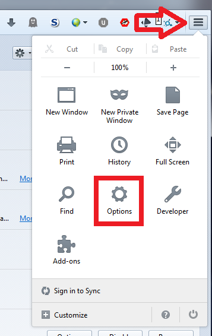
Once you open the options menu, you see the small window with a bunch of tabs and options. We are going to disable any options that send data out to third parties, and enable any features that disallow code to be executed without notifying us. The first tab we want to look at is the "search" tab. We are going to disable support for all of the search engines except for the ones we want. In the image shown, we have allowed only the Duck Duck Go search engine that is privacy oriented. Some users will prefer to leave Google Search active for more accurate results. This comes at the cost of privacy because Google uses many intrusive methods to improve their results and target them at you, the user. So the decision is up to you. We highly recommend only using one or two search engines.
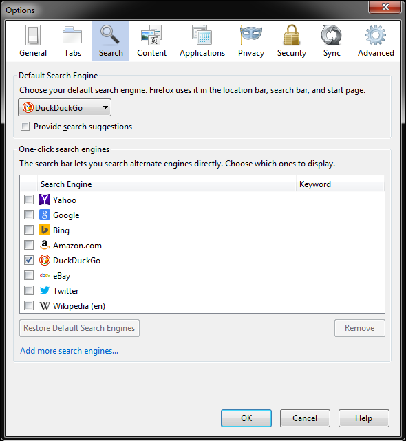
Next, we are going to look at the "Privacy" tab. Here we make sure that the "Do Not Track" option is enabled, which flags yourself to reputable websites as not wanting to be tracked. Some websites do not honor this request as it is considered voluntary, our extensions and other privacy and security changes will take care of those less-than-reputable sites. We are also going to set Firefox to "Never remember history" so that it will delete all of your history every time you close Firefox. Finally, we will disable all suggestions in the search bar as the suggestions process can leak excessive data about us.
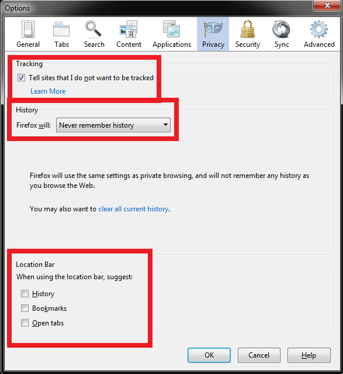
Next, we have the security tab. This is where we will tell Firefox to warn you when sites try to install add-ons, as well as allow Firefox to block reported attack websites and block reported forgeries, which would be sites that try to impersonate other sites like your bank, paypal, or other sites where you would unknowingly enter credentials to sign in and have them stolen.
We will also instruct Firefox not to remember passwords, which will prevent passwords for your website from being stored anywhere on the computer locally.
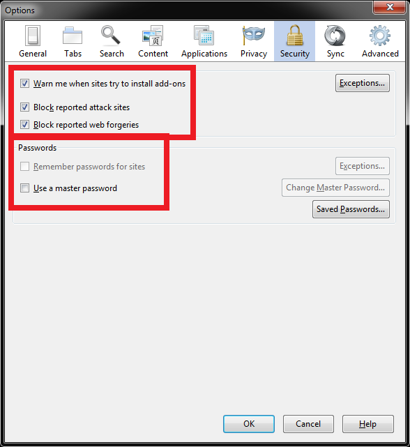
Next you'll click on the advanced tab. This tab has sub-tabs beneath it in the window. In the "Data Choices" sub-tab we will configure Firefox to not share Telemetry, or the Health Reporting, or the Crash Reporter. This is because this data being transmitted from your PC to outside servers can allow an attacker to get insight into how to break into your computer. For example, they can know that you have a vulnerable plugin installed that they can exploit, or that you have a particular feature of Windows enabled that is vulnerable. Similarly the crash reporter function can give an attacker insight into areas of your computer that may be malfunctioning and vulnerable.
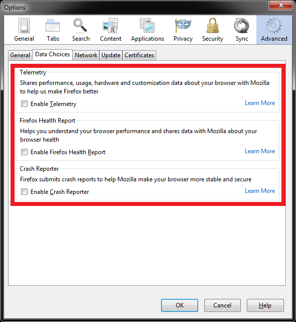
Next in the advanced tab is the "Network" sub-tab. Here we will make sure that you are warned when a website tries to save data to your PC that will be used offline and not in the current session. This is to advise you on whether the website may be trying to plant data on your PC that can track you or act maliciously.
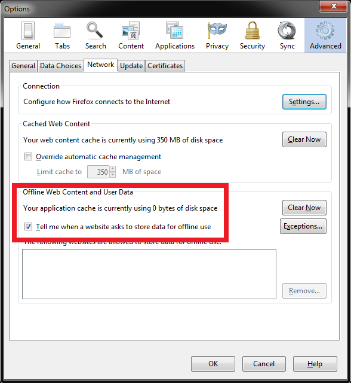
Finally on the advanced tab, we want to look at the "certificates" sub-tab. Make sure that it is configured as pictured. This allows Firefox to best judge whether the security certificates presented by the website are valid, and it warns you every time a site tries to query your personal certificate (which identifies you personally to the website with a unique identifier). This will allow you to block unwanted attempts to identify you, while strengthening your ability to trust genuine websites.
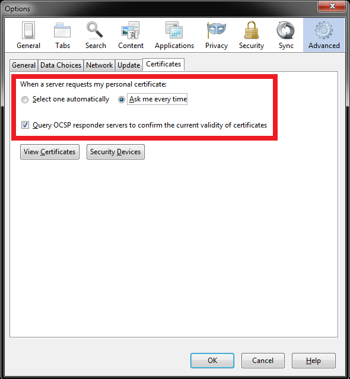
When you have made all of these changes, hit "OK" at the bottom of the window and all changes will be saved.
Next, we have the section on advanced blocking of unsafe encryption, and advanced settings to block new methods of identifying users who have already set up private browsers using their basic security settings in the menu.
Step 3: Advanced configuration of Firefox to block WebRTC, bad cipher suites, and more.
Here, were are going to access the not-so-secret advanced options menu in Firefox to further harden our browser against known threats. To access the options you type "about:config" in your URL bar at the top of the browser, and it will open up a huge set of advanced options to configure your browser in hundreds of ways. Some of these options just change the way the browser looks or behaves. Some others dramatically change the security and privacy of your browser. When you type in the about:config in the URL bar, you will be met with a warning that you can really screw things up if you do the wrong thing. We recommending heeding this warning and not changing any settings if you do not know precisely what they do.
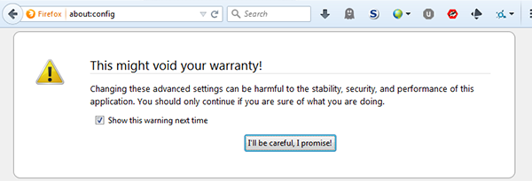
After clicking on the "I'll be careful, I promise!" button you will be at the advanced config page. It has a long list of options that is hard to sort through and find what you need, but you can use the search bar to filter through all of the options and find the ones discussed here.
The first thing we want to do is disable the WebRTC service, as this service pulls your IP address through a specific HTML5 call to your browser, and is particularly troublesome in Windows, as it can be used to pull a real IP address from behind a VPN.
To disable WebRTC, search for media.peerconnection.enabled and double-click on it. It should set it toFALSE.
Next we will modify the encryption that Firefox allows. This will protect you from websites with weak encryption (they wont load) and will also protect you from cipher negotiation attacks. There are a number of known attacks out there to force a client and server to use the weakest encryption enabled in their options. The best defense is to have all weak ciphers simply disabled. First we will disable RC4 ciphers, as they have known serious vulnerabilities. To bring up all of the RC4 ciphers that Firefox allows, search for "security*rc4" (without the quotes). Set them all to FALSE by double clicking on each one.
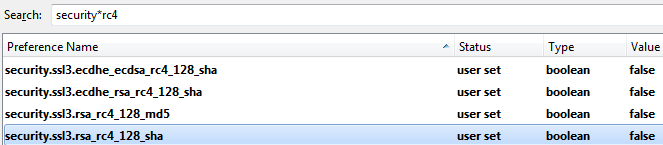
We will also want to disable the very weak 3DES cipher. To locate the cipher, search for "security*des" (without the quotes). Set the result to FALSE by double clicking on it.
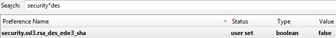
Next, we will make our browser reject insecure negotiation attempts with websites, and also warn us if an unsafe negotiation somehow takes place. To set these options, search for "security.ssl.require_safe_negotiation". It should be set to TRUE.
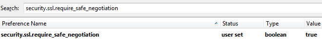
The other setting is "security.ssl.treat_unsafe_negotiation_as_broken". It should be set to TRUE.
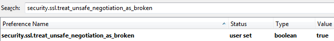
Next, we will make it so that Firefox does not remember form information anywhere. This is by searching for "browser.formfill.enable" and setting it to FALSE.
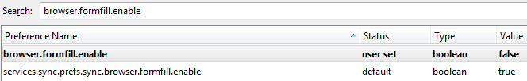
Next, we will make it so that Firefox will not cache data to disk. This is make sure that no shadow copies of your browsing information exist on your device. Set "browser.cache.disk.enable" to FALSE.
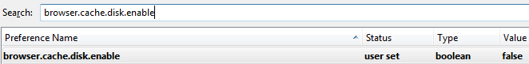
Firefox has a separate cache setting for secure websites. We also need to set "browser.cache.disk_cache_ssl" to FALSE.
We will also instruct Firefox not to cache any data for offline use. Set "browser.cache.offline.enable" toFALSE.
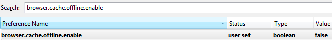
We will block Firefox from getting access to the clipboard. (When you cut or copy data, it goes to the clipboard. This stops Firefox from being able to read or manipulate that data.) Set "dom.event.clipboardevents.enabled" to FALSE.
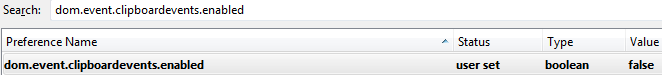
We will disable Geolocation services. This prevents Firefox from sending information about your network and location to 3rd parties (the default party is Google). Set "geo.enabled" to FALSE.
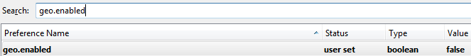
We will instruct Firefox to throw away all cookies every time you close the browser. Set "network.cookie.lifetimePolicy" to 2. To set a number to a setting, double click on it like you have been, and Firefox will prompt you to enter a number into the field for the setting.
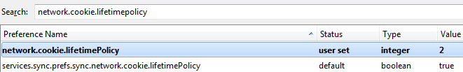
We will disable the ability for Firefox to report what plugins are installed. This is both to prevent fingerprinting (having unique plugins installed, or a unique combination of plugins) and to block websites from intentionally removing content when they detect certain plugins (Facebook does this with NoScript, and others). Set "plugin.scan.plid.all" to FALSE.
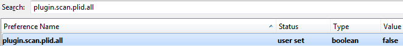
Step 4: Fighting Browser Fingerprinting by Spoofing User Agents.
This is a new section to our guide this year. The use of user-agent based fingerprinting is rapidly on the rise due to the rising concern about cookies and cache. Governments and marketers alike are interested in uniquely identifying people by any means necessary, which includes profiling what browser and operating system you are using. The best way to get this information is by requesting what is called the "user agent" from the browser. You can disable user agents in Firefox entirely, but no response is actually a unique response that can make you identifiable to an adversary. Your best bet is to hide in the crowd, by setting Firefox to return the most common user agents that are being used.
To do this, we have to be able to send out fake user agents whenever they are requested from the browser. We will accomplish this with two extensions for Firefox.
UAControl and User-Agent JS Fixer
UAControl allows us to change our user agent to whatever we want, and the User-Agent JS Fixer applies the same user agent changes to more complex Javascript requests for User Agents.
After installing these two extensions, we need to figure out what kind of user-agent to use. To accomplish this we need to see what the most common user agents are. The site http://www.browser-info.net/useragents is fantastic for showing the latest trends in user agents in real time. If you scroll down to the bottom it has a list of the most popular user agents that visit the site. There, you can click on any of the user agents in the list and get additional info. You will then see a screen like below that gives you more information about the user agent, and the exact string to import to our plugins to spoof our user agent to be a perfectly common one.
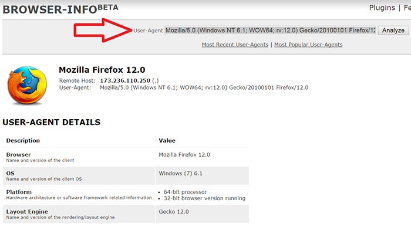
You want to right click on the user agent string and "copy" it.
Then we will click on the menu button in Firefox, and open our "add-ons" window again. From there, we will click on the Options button for UAControl. You will see a window like below. You want to click the "edit" button.
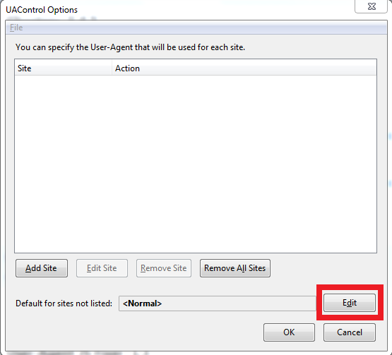
From here, you can edit the user agent by selecting "custom" and then click on the blank field, and paste your user agent from the browser-info website into that field, and hit OK.
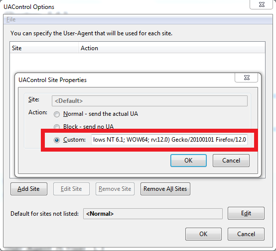
This will make us immune to browser profiling and browser discrimination.
Step 5: Deleting Untrusted Root Certificates.
This step requires some time and patience, and is only for the most privacy conscious users who are concerned with the advent of mass surveillance.
The internet relies heavily on trust. The Certificate Authority (CA) system (in an ideal world) creates trust, because there are only a handful of entities around the world that can give out security certificates, and your browser trusts those websites by default. This means that if I buy a certificate for Microsoft.com from a CA, and they only verify who I am by checking that my email is valid, I now have a certificate that browsers will trust and can impersonate Microsoft.com far more convincingly, as the site will be SSL secured. Most people do not go through the trouble of checking certificates, and it isn't easy to tell if a certificate is genuine.
There have been multiple incidents where governments or individuals have compromised the CA system to steal information. So this is a real threat with real consequence.
By default Firefox trusts hundreds of CAs. Some of the troubling highlights include the China Internet Network Information Center (their censorship / Great Firewall organization), RSA Security who compromised their own encryption for the NSA, the governments of Spain, Hong Kong, Taiwan, Japan, France, Turkey, The Netherlands, and many more.
To minimize this risk, it is best to remove the trust of any certificate authorities that you do not regularly use. The easiest way to do this is to visit all of the sites you normally visit, and look at the certificate information. To look at the certificate information for a site, travel to the site and click on the lock next to the URL in your navigation bar, then on "more information", then on "view certificate", then go to the "details" tab.
This is the certificate I receive from Google.com. We can see that the root CA for Google.com is GeoTrust Global CA.
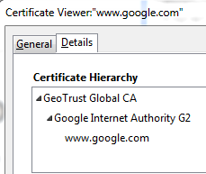
Facebook issues a cert from DigiCert.
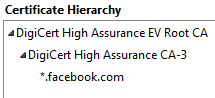
Reddit issues a cert from UTN-USERFirst-Hardware.
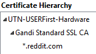
Twitter issues a cert from Verisign.
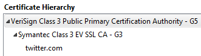
So what you want to do is go through all of your frequently visited secure sites, and write down the certificates that they use. From here you can figure out which certificates you need to trust, and which ones you do not. This dramatically reduces the risk of your browser trusting a CA that has been compromised.
To view and delete the certificates that are trusted by default, go to the options menu, click on options, go to the advanced tab, then the certificates sub-tab, and then click on "view certificates".
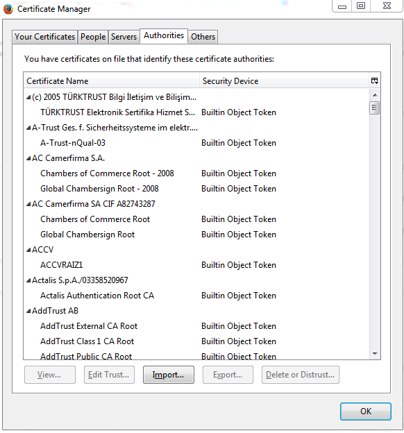
You will see a long list of root CAs that your browser blindly trusts. Delete any that you do not use. You do this by clicking on the "Builtin Object Token" and clicking on the "Delete or Distrust" button.
If you visit a site that uses a certificate that your PC does not trust, you will get a big ugly warning (rightfully so) warning you about proceeding to the site. You should be especially cautious if you get this error for a site that you can normally visit without errors, because this means that the site's cert has changed, which can indicate that you are being led to a fake website.
With all of these changes you will be in for a much more private and secure user experience with Firefox. As always, enjoy your free and open internet!
If you have any questions or comments for us, you can reach Viking VPN Service Google+, Viking VPN Service Twitter, and via Customer Care.
Learn why Viking VPN Service is the Fastest VPN Service Provider.